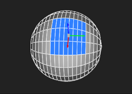

当您平移、旋转或缩放顶点、边、面或对象时，您可以更改动作的初始位置 (即, 每当您更改选择时，变换手柄就会出现)。要这样做:
| 1。 |
确保
编辑模式
|
| 2. | 要更改变换句柄相对于当前选择的默认位置，请设置 处理 pos 在观众的顶部: |
• 选择平均 -变换手柄显示在所有选定项目的平均位置。
• 对象中心 -变换控制柄显示在选定项目所属对象的边界框的中心。

• 对象曲面 -变换控制柄将捕捉到对象的表面，尽可能接近选择中的平均位置。这是默认行为。
注意: 的 对象中心 和 对象曲面 仅当您在单个对象上选择了项目时，选项才适用。如果您在多个对象上选择了项目, 选择平均 总是被使用。
| 3. | 要更改变换手柄相对于当前选择的方向，请设置 手柄对齐 在观众的顶部: |
• 世界斧头 -变换控制柄是定向的，以便 x 、 y 和 z 箭头与世界 x 、 y 和 z 轴对齐。
• 对象轴 -变换控制柄是定向的，以便 x 、 y 和 z 箭头与对象的局部 x 、 y 和 z 轴对齐。

• 表面正常 -变换控制柄是定向的，以便 y 箭头与对象的曲面法线对齐，x 和 z 轴是任意方向的。这是默认行为。
注意: 的 对象轴 和 表面正常 仅当您在单个对象上选择了项目时，选项才适用。如果您在多个对象上选择了项目, 世界斧头 总是被使用。
| 4. | 要防止在更改选择时更改变换手柄的位置和对齐方式，请启用 锁定 在观众的顶部。 |
这使得相对于它的一条边旋转一个面更容易，例如: Ctrl / Cmd Alt 将变换手柄拖动到正确的位置，您可以设置 处理 pos 到 选择平均 ,选择边，然后启用 锁定 。然后选择面时，变换手柄将保持在它们所在的位置。
|
|
|
|
选择边和
启用 锁定 . |
围绕着旋转一个面
以前选择的边。 |
|
|